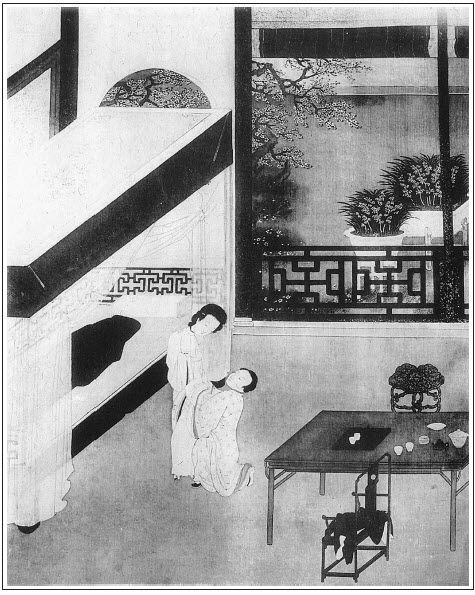

張回此回卻是兩個半截文字：前半篇是挨光的下半截，後半篇是捉姦的上半截。
看他入手幾語，用王婆口中，將娘子、大官人沒原沒故扭攏一塊，便把門拽上，此是九分光，卻是下半截文字已完。下文另用通身氣力，寫娘子、大官人也。
寫二人勾情處，須將後文陳敬濟幾回勾挑處合看，方知此回文字之妙，方知後幾回文字之妙，絕不雷同也。
開手將兩人眼睛雙起花樣一描，最是難堪，卻最是入情。後卻使婦人五低頭，七笑，兩斜瞅，便使八十老人，亦不能寧耐也。
五低頭內，妙在一「別轉頭」。七笑內，妙在一「帶笑」、一「笑著」、一「微笑」、「一面笑著……低聲」、一「低聲笑」、一「笑著不理他」、一「踢著笑」、一「笑將起來」，遂使紙上活現。試與其上下文細細連讀之方知。
「帶笑」者，臉上熱極也。「笑著」者，心內百不是也，「臉紅了微笑」者，帶三分慚愧也。「一面笑著低聲」者，更忍不得癢極了也。「一低聲笑」者，心頭小鹿跳也。「笑著不理他」者，火已打眼內出也。「踢著笑」者，半日兩腿夾緊，至此略鬆一鬆也。「笑將起來」者，則到此真個忍不得也。何物文心，作怪至此！
又有兩「斜瞅」內，妙在要使斜瞅他一眼兒，是不知千瞅萬瞅也。寫淫婦至此，盡矣，化矣。再有筆墨能另寫一樣出來，吾不信也。然他偏又能寫後之無數淫婦人，無數眉眼伎倆，則作者不知是天仙是鬼怪！
又咬得衫袖「格格駁駁的響」，讀者果平心靜氣時，看到此處，不廢書而起，不聖賢即木石。
前文寫兩人淫慾已絕，後文偏又能接手寫第二日一段。總之才高一石不能測也。
寫二人妙矣，必彰明校著寫兩人之物。一部內用西門之物者不少，用金蓮之物者亦不少也。用西門之物，非一人，用金蓮之物，亦非一人。故必先寫二物，門面身份，一一抬出也。
後文鄆哥一段，止是過文。看他亦一字不苟，寫籃，寫梨，寫籃落梨滾，鄆哥一面罵，一面哭，一面走，一面拾梨，一面提籃，又一面指著四轉罵，然回轉身來罵，卻又是一面走也。文心活潑周到，無一點空處。吾不知作者於做完此一百回時，心血更有多少。我卻批完此一回時，心血已枯了二半也。
詩曰：
璇閨繡戶斜光入，千金女兒倚門立。
橫波美目雖後來，羅襪遙遙不相及。
聞道今年初避人，珊珊鏡掛長隨身。張旁以上千金聲價。
願得侍兒為道意，後堂羅帳一相親。張旁一筆抹倒。

話說王婆拿銀子出門，便向婦人滿面堆下笑來，說道：「老身去那街上取瓶兒來，有勞娘子相待官人坐一坐。壺裡有酒，沒便再篩兩盞兒，且和大官人吃著，老身直去縣東街，那裡有好酒買一瓶來，有好一歇兒耽擱。」繡旁明放一路，使之放心。婦人聽了說：「乾娘休要去，奴酒不多用了。」繡旁只用色罷。婆子便道：「阿呀！張夾如聞其聲。娘子，大官人又不是別人，繡旁奇。沒事相陪吃一盞兒，怕怎的！」張夾娘子是誰？大官人又是誰？縱沒事，便可相陪一盞，不怕乎？寫得沒理的，妙絕。婦人口裡說「不用了」坐著卻不動身。張夾九分光束住，下單寫一分光。婆子一面把門拽上，用索兒拴了，倒關他二人在屋裡。當路坐了，一頭續著鎖。
這婦人見王婆去了，倒把椅兒扯開一邊坐著，繡旁此際起身遲矣。卻只偷眼睃看。繡眉媚極。張夾一筆婦人。西門慶坐在對面，一徑把那雙涎瞪瞪的眼睛看著他，張夾一筆西門慶。便又問道：「卻才到忘了問娘子尊姓？」婦人便低著頭帶笑的張旁一笑。回道：「姓武。」張夾一遍低頭。西門慶故做不聽得，說道：「姓堵？」那婦人卻把頭又別轉著，笑著張旁二笑。低聲說道：張夾兩遍別轉頭。「你耳朵又不聾。」西門慶笑道：「呸，忘了！正是姓武。只是俺清河縣姓武的卻少，只有縣前一個賣飲餅的三寸丁姓武，叫做武大郎，敢是娘子一族麼？」繡眉呆裡撒奸。婦人聽得此言，便把臉通紅了，一面低著頭微笑道：張旁三笑。張夾三遍低頭。「便是奴的丈夫。」西門慶聽了，半日不做聲，呆了臉，假意失聲道：「屈。」婦人一面笑著，張旁四笑。又斜瞅了他一眼，繡旁騷極。低聲說道：「你又沒冤枉事，怎的叫屈？」西門慶道：「我替娘子叫屈哩！」張夾自王婆去後，此一段乃是絕妙春宮。必看至後文，王婆炕上云云是春宮，是淫事，便瞎了也。卻說西門慶口裡娘子長娘子短，只顧白嘈。張夾又總一句。這婦人一面低著頭弄裙子兒，張夾四遍低頭。又一回咬著衫袖口兒，咬得袖口兒格格駁駁的響，要便斜溜他一眼兒。繡眉寫情處，讀者魂飛，況身親之者乎!張夾《水滸傳》有此追魂取魄之筆乎！只見這西門慶推害熱，脫了上面綠紗褶子道：「央煩娘子替我搭在乾娘護炕上。」這婦人只顧咬著袖兒別轉著，不接他的，低聲笑道：張旁五笑。「自手又不折，怎的支使人！」繡眉句句推辭，句句撩撥，不由人不死也。西門慶笑著道：「娘子不與小人安放，小人偏要自己安放。」一面伸手隔桌子搭到床炕上去，卻故意把桌上一拂，拂落一隻箸來。卻也是姻緣湊著，那只箸兒剛落在金蓮裙下。西門慶一面斟酒勸那婦人，婦人笑著張旁六笑。不理他。他卻又待拿起箸子起來，讓他吃菜兒。尋來尋去不見了一隻。這金蓮一面低著頭，張夾五遍低頭。把腳尖兒踢著，笑道：「這不是你的箸兒！」西門慶聽說，走過金蓮這邊來道：張夾走過來。「原來在此。」蹲下身去，且不拾箸，便去他繡花鞋頭上只一捏。那婦人笑將起來，張旁七笑。說道：「怎這的羅皂！我要叫了起來哩！」西門慶便雙膝跪下說道：「娘子可憐小人則個！」一面說著，一面便摸他褲子。婦人扠開手道：「你這歪廝纏人，我卻要大耳刮子打的呢！」西門慶笑道：「娘子打死了小人，也得個好處。」張夾一段寫西門慶入馬已完，文章通身氣力已放下，下文乃餘言耳。不知者乃謂下文方是正經事，卻不知冤屈了人家正經用意，寫出的妙文也。於是不由分說，抱到王婆床炕上，脫衣解帶，共枕同歡。卻說這婦人自從與張大戶勾搭，這老兒是軟如鼻涕膿如醬的一件東西，幾時得個爽利！張夾一個。就是嫁了武大，看官試想，三寸丁的物事，能有多少力量？張夾又一個。今番遇了西門慶，風月久慣，本事高強的，如何不喜？但見：
交頸鴛鴦戲水，並頭鸞鳳穿花。喜孜孜連理枝生，美甘甘同心帶結。張夾看官心事。一個將朱唇緊貼，一個將粉臉斜偎。羅襪高挑，肩膀上露兩彎新月；金釵斜墜，枕頭邊堆一朵烏雲。繡眉絕妙春圖。張夾一番做作也。誓海盟山，搏弄得千般旖妮；羞雲怯雨，揉搓的萬種妖嬈。恰恰鶯聲，不離耳畔。津津甜唾，笑吐舌尖。張夾正寫出二人淫事。楊柳腰脈脈春濃，櫻桃口微微氣喘。張夾將完事也。星眼朦朧，細細汗流香玉顆；酥胸蕩漾，涓涓露滴牡丹心。直饒匹配眷姻諧，真個偷情滋味美。張夾即此小小一賦，亦不苟。起四句，是作者看官心頭事，下六句，乃入手做作推就處，下八句正寫，止用：「搏弄」「揉搓」，已極狂淫世界，下四句，將完事兒；下四句已完事也；末二句，又入看官眼內。粗心人自不知。
當下二人雲雨才罷，正欲各整衣襟，只見王婆推開房門入來，大驚小怪，拍手打掌，低低說道：繡眉老奸。「你兩個做得好事！」西門慶和那婦人都吃了一驚。張夾婦人驚，固是。西門則何驚哉？而亦必驚，寫心虛人如畫。那婆子便向婦人道：「好呀，好呀！我請你來做衣裳，不曾交你偷漢子！繡旁有理。你家武大郎知，須連累我。不若我先去對武大說去。」回身便走。那婦人慌的扯住她裙子，紅著臉低了頭，只得說聲：「乾娘饒恕！」繡眉從來首事者每能為局外之談，此寫生手也，較原本逕庭矣；讀者詳之。王婆便道：「你們都要依我一件事，從今日為始，瞞著武大，每日休要失了大官人的意。早叫你早來，晚叫你晚來，我便罷休。若是一日不來，我便就對你武大說。」那婦人羞得要不的，再說不出來。張夾又白描一句。王婆催逼道：「卻是怎的？快些回覆我。」婦人藏轉著頭，低聲道：「來便是了。」王婆又道：「西門大官人，你自不用老身說得，這十分好事已都完了，所許之物，不可失信，繡旁王婆此時供出，金蓮大可番招。張夾作者至此，亦通身快樂，十分文章，已滿足也。你若負心，我也要對武大說。」西門慶道：「乾娘放心，並不失信。」婆子道：「你每二人出語無憑，要各人留下件表記拿著，才見真情。」西門慶便向頭上拔下一根金頭簪來，插在婦人云髻上。張旁已為玉樓伏線。婦人除下來袖了，恐怕到家武大看見生疑。婦人便不肯拿甚的出來，卻被王婆扯著袖子一掏，掏出一條杭州白縐紗汗巾，掠與西門慶收了。繡眉作者傳神處，宜玩。張夾餘文。三人又吃了幾杯酒，已是下午時分。那婦人起身道：「奴回家去罷。」便丟下王婆與西門慶，踅過後門歸來。張夾後門四。先去下了簾子，張夾又點簾子。武大恰好進門。
且說王婆看著西門慶道：「好手段麼？」西門慶道：「端的虧了乾娘，真好手段！」王婆又道：「這雌兒風月如何？」西門慶道：「色系子女不可言。」婆子道：「她房裡彈唱姐兒出身，甚麼事兒不久慣知道！張夾點出金蓮身份。還虧老娘把你兩個生扭做夫妻，強撮成配。你所許老身東西，休要忘了。」西門慶道：「我到家便取銀子送來。」王婆道：「眼望旌捷旗，耳聽好消息。不要交老身棺材出了討輓歌郎錢。」繡眉千叮萬囑。西門慶一面笑著，看街上無人，帶上眼紗去了。不在話下。
次日，又來王婆家討茶吃。王婆讓坐，連忙點茶來吃了。西門慶便向袖中取出一錠十兩銀子來，遞與王婆。但凡世上人，錢財能動人意。張夾色中點出財。那婆子黑眼睛見了雪花銀子，一面歡天喜地收了，一連道了兩個萬福，說道：「多謝大官人佈施！」繡眉「佈施」二字，為此輩口頭禪者不少。因向西門慶道：「這咱晚武大還未出門，待老身往她家推借瓢，看一看。」一面從後門張夾後門五。踅過婦人家來。婦人正在房中打發武大吃飯，聽見叫門，問迎兒：「是誰？」迎兒道：「是王奶奶來借瓢。」婦人連忙迎將出來道：「乾娘，有瓢，一任拿去。且請家裡坐。」婆子道：「老身那邊無人。」因向婦人使手勢，婦人就知西門慶來了。繡旁慧心。
婆子拿瓢出了門，一力攛掇武大吃了飯，挑擔出去了。先到樓上從新妝點，換了一套艷色新衣，吩咐迎兒：「好生看家，我往你王奶家坐一坐就來。若是你爹來時，就報我知道。若不聽我說，打下你個小賤人下截來。」迎兒應諾不題。婦人一面走過王婆茶坊裡來。正是：
合歡桃杏春堪笑，心裡原來別有仁。
有詞單道這雙關二意：
這瓢是瓢，口兒小身子兒大。你幼在春風棚上恁兒高，到大來人難要。他怎肯守定顏回甘貧樂道，專一趁東風，水上漂。也曾在馬房裡喂料，也曾在茶房裡來叫，如今弄得許由也不要。赤道黑洞洞葫蘆中賣的甚麼藥？張夾借瓢即影入。文情狡猾，隨手生來。
那西門慶見婦人來了，如天上落下來一般，兩個並肩疊股而坐。王婆一面點茶來吃了，因問：「昨日歸家，武大沒問甚麼？」張夾虛心。婦人道：「他問乾娘衣服做了不曾，我說道衣服做了，還與乾娘做送終鞋襪。」說畢，婆子連忙安排上酒來，擺在房內，二人交杯暢飲。這西門慶仔細端詳那婦人，比初見時越發標緻。吃了酒，粉面上透出紅白來，兩道水鬢描畫的長長的。端的平欺神仙，賽過嫦娥。
動人心紅白肉色，堪人愛可意裙釵。裙拖著翡翠紗衫，袖挽泥金帶。喜孜孜寶髻斜歪。恰便似月裡嫦娥下世來，不枉了千金也難買。張夾濃艷妖淫。
西門慶誇之不足，摟在懷中，掀起他裙來，看見他一對小腳穿著老鴉緞子鞋兒，恰剛半叉，心中甚喜。一遞一口與他吃酒，嘲問話兒。婦人因問西門慶貴庚，西門慶告他說：「二十七歲，七月二十八日子時生。」張夾生日於此時逗出。婦人問：「家中有幾位娘子？」西門慶道：「除下拙妻，還有三四個身邊人，只是沒一個中我意的。」婦人又問：「幾位哥兒？」西門慶道：「只是一個小女，早晚出嫁，並無娃兒。」張夾伏後文生子。西門慶嘲問了一回，向袖中取出銀穿心金裹面盛著香茶木樨餅兒來，用舌尖遞送與婦人。兩個相摟相抱，鳴咂有聲。那婆子只管往來拿菜篩酒，那裡去管他閒事，由著二人在房內做一處取樂玩耍。少頃吃得酒濃，不覺烘動春心，西門慶色心輒起，露出腰間那話，引婦人纖手捫弄。張旁婦人捫。原來西門慶自幼常在三街四巷養婆娘，根下猶帶著銀打就，藥煮成的托子。那話煞甚長大，紅赤赤黑鬚，直豎豎堅硬，好個東西：
一物從來六寸長，有時柔軟有時剛。
軟如醉漢東西倒，硬似風僧上下狂。
出牝入陰為本事，腰州臍下作家鄉。
天生二子隨身便，曾與佳人斗幾場。繡眉語俗，然留之可入俗眼。
少頃，婦人脫了衣裳。西門慶摸見牝戶上並無毳毛，張旁西門摸。猶如白馥馥、鼓蓬蓬髮酵的饅頭，軟濃濃、紅縐縐出籠的果餡，張旁婦人添此兩句，不堪之甚。真個是千人愛萬人貪一件美物：
溫緊香干口賽蓮，能柔能軟最堪憐。
喜便吐舌開顏笑，困便隨身貼股眠。
內襠縣裡為家業，薄草涯邊是故園。
若遇風流輕俊子，等閒戰鬥不開言。
話休饒舌。那婦人自當日為始，每日踅過王婆家來，和西門慶做一處，恩情似漆，心意如膠。自古道：好事不出門，惡事傳千里。不到半月之間，街坊鄰舍都曉的了，只瞞著武大一個不知。張夾以上一段，將情事一頓，即借街坊鄰舍插入鄆哥。正是：
自知本分為活計，那曉防奸革弊心。
話分兩頭。且說本縣有個小的，年方十五六歲，本身姓喬，因為做軍在鄆州生養的，取名叫做鄆哥。家中只有個老爹，年紀高大。那小廝生得乖覺，自來只靠縣前這許多酒店裡賣些時新果品，時常得西門慶繼發他些盤纏。繡眉物蠹則蟲入之，室高則鬼瞰之。樂極悲生，鄆哥亦天之所使。其日正尋得一籃兒雪梨，提著繞街尋西門慶。又有一等多口人說：「鄆哥你要尋他，我教你一個去處。」鄆哥道：「起動老叔，教我那去尋他的是？」那多口的道：「我說與你罷。西門慶刮剌上賣炊餅的武大老婆，每日只在紫石街王婆茶坊裡坐的。這咱晚多定只在那裡。你小孩子家，只故撞進去不妨。」那鄆哥得了這話，謝了那人，提了籃兒，一直往紫石街走來，逕奔入王婆茶坊裡去。卻正見王婆坐在小凳兒上績線，張旁方知做十分光時，王婆攔門紡績之妙。此處一映，西門、金蓮皆躍然欲出。鄆哥把籃兒放下，看著王婆道：「乾娘！聲喏。」那婆子問道：「鄆哥，你來這裡做甚麼？」鄆哥道：「要尋大官人，賺三五十錢養活老爹。」婆子道：「甚麼大官人？」鄆哥道：「情知是那個，便只是他那個。」繡旁小賊。婆子道：「便是大官人，也有個姓名。」鄆哥道：「便是兩個字的。」婆子道：「甚麼兩個字的？」鄆哥道：「乾娘只是要作耍。我要和西門大官人說句話兒！」望裡便走。那婆子一把揪住道：「這小猴子那裡去？人家屋裡，各有內外。」鄆哥道：「我去房裡便尋出來。」王婆罵道：「含鳥小囚兒！我屋裡那裡討甚麼西門大官？」鄆哥道：「乾娘不要獨自吃，也把些汁水與我呷一呷。繡旁賊。我有甚麼不理會得！」婆子便罵：「你那小囚攮的，理會得甚麼？」鄆哥道：「你正事『馬蹄刀木杓裡切菜──水洩不漏』，直要我說出來，只怕賣炊餅的哥哥發作！」繡旁惡，惡。那婆子吃他這兩句道著他真病，心中大怒，喝道：「含鳥小猢猻，也來老娘屋裡放屁！」鄆哥道：「我是小猢猻，你是馬泊六，做牽頭的老狗肉！」繡眉罵的直恁痛快。那婆子揪住鄆哥鑿上兩個栗暴。鄆哥叫道：「你做甚麼便打我？」婆子罵道：「賊㒲娘的小猢猻！你敢高做聲，大耳刮子打出你去。」鄆哥道：「賊老咬蟲，沒事便打我！」這婆子一頭叉，一頭大栗暴，直打出街上去，把雪梨籃兒也丟出去。張夾梨籃。那籃雪梨四分五落滾了開去。張夾梨。這小猴子打那虔婆不過，一頭罵，張夾罵。一頭哭，張夾哭。一頭走，張夾走。一頭街上拾梨兒，繡眉好看。張夾拾梨寫得妙在色色俱到。指著王婆茶坊裡罵道：「老咬蟲，我交你不要慌！我不與他不做出來不信！定然遭塌了你這場門面，交你賺不成錢！」這小猴子提個籃兒，逕奔街上尋這個人。張夾以上鄆哥一段小引，而捉姦又為文，總為捉姦作用藥來由也。卻正是：
掀翻孤兔窩中草，驚起鴛鴦沙上眠。繡眉寫著。
文回文禹門云：此刻西門慶，早已忘記武松，此刻潘金蓮，但知防備武植；此刻王婆子，惟有借金蓮之貨，以騙西門之財，是三人者，正是利令智昏，色迷心竅，如入茫茫大海，實有不能自主者。想當時清河縣中，知其事者，應有人為之搖頭，應有人為之吐舌，應有人為之切齒，應有人為之握拳。大抵為之憤懣不平者居多，而羨慕之、妒嫉之，竟思傚法之者蓋寡。耳聞其事，目睹其形者，俱有天理良心在。奈何後之人看此書者，明明知是《水滸傳》中翻案，烏有先生說謊，子虛羅土掉皮，乃不知不覺，心往於王婆屋中，顛鸞倒風，神遊於王婆床上，殢雨尤雲。反而細思，能不大笑！此其人，尚可與看此書乎？不看《金瓶梅》，其心已有不堪問；再看《金瓶梅》，其事將有不可言者。果《金瓶梅》之誤人歟？抑人之自誤於《金瓶梅》歟？